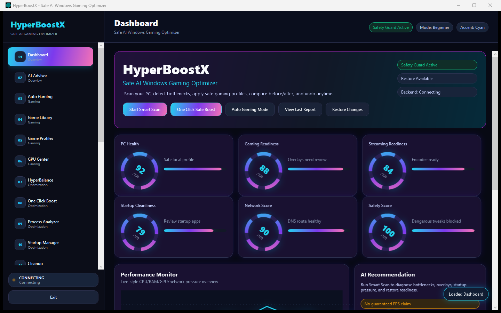
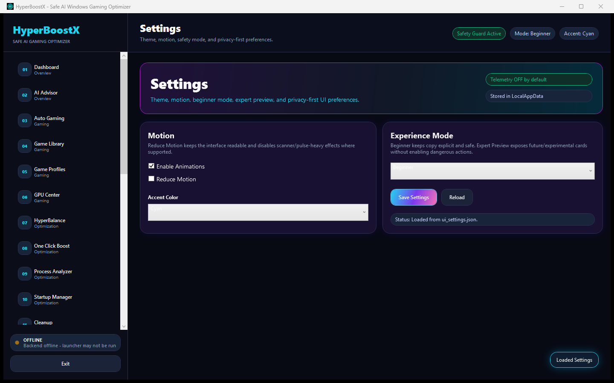
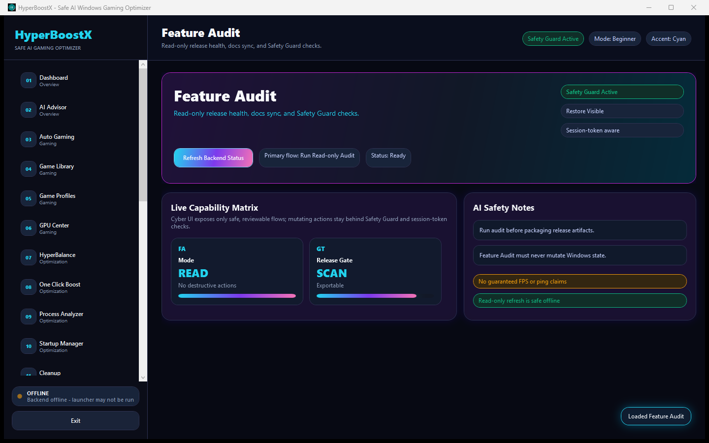

AI Performance Advisor
Local diagnosis for CPU, GPU, RAM, VRAM, storage, startup, overlays, and network pressure.
v2.0 Ultimate Winner Edition
Safe AI Windows Gaming Optimizer for scanning bottlenecks, building reviewable gaming plans, comparing before/after reports, and restoring changes when supported.
No guaranteed FPS claim. No vendor partnership claim. Unsigned builds may show Unknown Publisher or SmartScreen.

Command center
Local diagnosis for CPU, GPU, RAM, VRAM, storage, startup, overlays, and network pressure.
Score rings, system cards, scanner line, backend pulse, Safety Guard, and restore indicator.
Preview safe profile metadata, protect important apps, and keep restore visibility before applying changes.
Vendor-aware guidance for NVIDIA, AMD Radeon, Intel Arc/iGPU, Microsoft Basic, and unknown fallback.
Local benchmark input/import, history, timeline, and exportable before/after reporting.
Explains DLSS, FSR, XeSS, Reflex, Frame Generation, Resizable BAR, VRR, HAGS, and more.
Safety Guard
HyperBoostX is not a risky tweak pack. Mutating flows stay behind scan, plan, Safety Guard, user approval, restore metadata, report, and undo visibility where supported.
Screenshots


Checksum
Use PowerShell to compare the downloaded installer with `SHA256SUMS.txt` from the same GitHub Release.
Get-FileHash .\HyperBoostXInstaller.exe -Algorithm SHA256
Get-Content .\SHA256SUMS.txtFAQ
No. It helps reduce unnecessary pressure, detect conflicts, explain bottlenecks, and build safe plans. Results depend on hardware, games, drivers, thermals, and settings.
No. HyperBoostX provides vendor-aware guidance, but it is not an official vendor app or driver replacement.
No. RGB control, OC, undervolt, voltage, and BIOS features are not implemented.
No telemetry is uploaded by default. Core features are local-first.